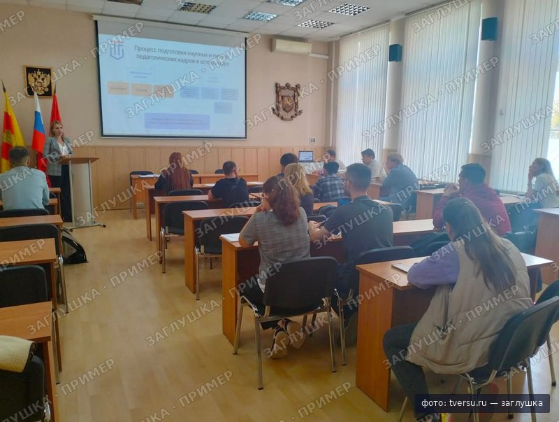
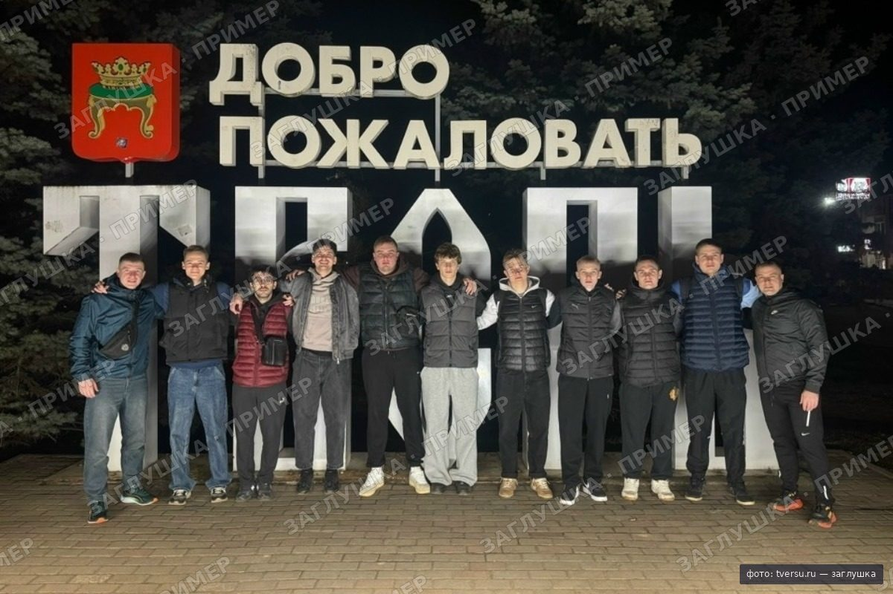

Университет, в котором живёт город
15 факультетов и институтов в историческом центре Твери, между Москвой и Петербургом.
- основан
- 1870
- образовательных программ
- 129
- место в России, Round University Ranking 2026
- 93-е
- Национальный агрегированный рейтинг 2026
- Топ-200
Вуз города, а не филиал столичного
Среди выпускников и сотрудников ТвГУ
- Николай Кунавтор «Легенд и мифов Древней Греции»
- Александр Александровкомпозитор, автор музыки гимна России
- Андрей Дементьевпоэт
- Наталья Непряеваолимпийская чемпионка
Партнёры и работодатели
129 программ. Найди свою
-
 IT и математика
IT и математика
-
 Естественные науки
Естественные науки
-
 Гуманитарные
Гуманитарные
-

Педагогика и психология - Экономика и право
-
 Спорт
Спорт
Кампус — это центр Твери
От главного корпуса до Волги пешком. Общежития — в студенческом городке.
- Главный корпус
- Студенческий городок
- Набережная Волги

Вопросы перед поступлением
Сколько бюджетных мест и какие проходные баллы?
[N бюджетных мест] по всем программам. Проходные баллы прошлых лет по каждому направлению — в каталоге программ: [N] в среднем.
Дадут ли общежитие, если я не из Твери?
Иногородним студентам очной формы: [N мест] в студенческом городке, стоимость [N ₽ в месяц]. Заявление на заселение подаётся вместе с документами.
Сколько стоит платное обучение?
От [N ₽ в год] в зависимости от программы. Есть скидки и рассрочка: [условия].
Можно подать документы через Госуслуги?
Да, заявление подаётся через Госуслуги, в личном кабинете абитуриента или лично в приёмной комиссии на Желябова, 33.
Что такое целевое обучение и как на него попасть?
Работодатель оплачивает или поддерживает учёбу, а вы после выпуска работаете у него [N лет]. Отдельный конкурс: [N мест].
Приёмная кампания 2027
- [дата]Старт приёма документов
- [дата]Последний день подачи на бюджет
- [дата]Публикация конкурсных списков
- [дата]Зачисление
— День открытых дверей на Желябова, 33.